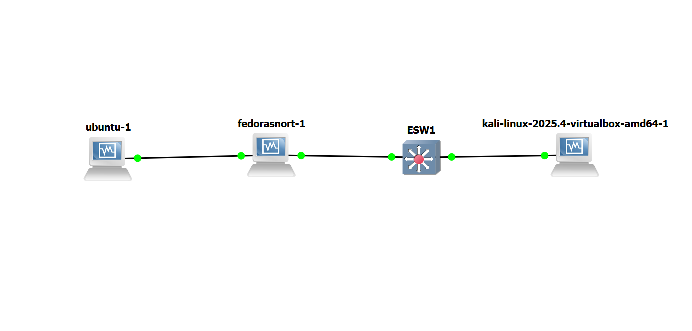
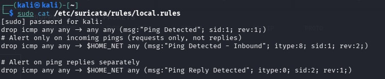
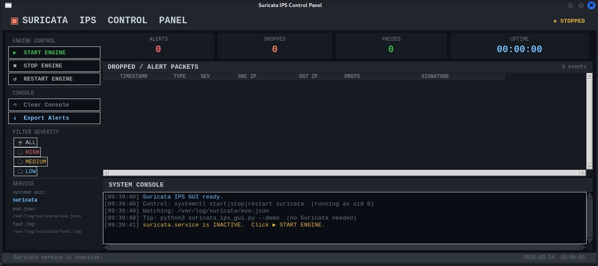
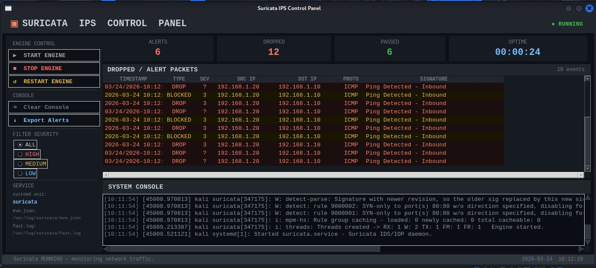

Documentation technique sur la mise en œuvre d'un système de prévention d'intrusion actif entre Kali Linux et Ubuntu Server.
L'IPS est placé physiquement entre l'attaquant et la cible. Contrairement à un IDS passif, le trafic traverse l'IPS. Chaque paquet est inspecté avant d'être réémis. Si une menace est détectée, le paquet est détruit (Drop), coupant net la communication malveillante.
Nous utilisons NFQUEUE du pare-feu Linux. Il permet de déporter la décision de filtrage du noyau vers un logiciel utilisateur (Suricata). Le paquet est mis en attente, Suricata l'analyse et renvoie un verdict : ACCEPT ou DROP.

Fedora agit comme une passerelle intelligente. Elle possède deux cartes réseau : enp0s3 (vers Ubuntu) et enp0s8 (vers Kali).
# Carte 1 : Vers le réseau de la victime (Ubuntu)
sudo nmcli con add type ethernet con-name "LAN-UBUNTU" ifname enp0s3 ipv4.addresses 10.2.1.1/24 ipv4.method manual
# Carte 2 : Vers le réseau de l'attaquant (Kali)
sudo nmcli con add type ethernet con-name "LAN-KALI" ifname enp0s8 ipv4.addresses 10.2.2.2/24 ipv4.method manual
# Activation des connexions
sudo nmcli con up "LAN-UBUNTU"
sudo nmcli con up "LAN-KALI"
Note : L'utilisation de nmcli assure que les adresses persistent après un redémarrage.
# Autoriser le passage des paquets au niveau du noyau
sudo sysctl -w net.ipv4.ip_forward=1
# Désactiver firewalld pour laisser iptables gérer le flux
sudo systemctl disable --now firewalld
# Rediriger le trafic vers la file d'attente Suricata (avec Bypass)
sudo iptables -I FORWARD -j NFQUEUE --queue-num 0 --queue-bypass
--queue-bypass est vitale : elle permet au réseau de fonctionner normalement tant que Suricata n'est pas lancé, facilitant ainsi les tests de connectivité (Ping).
setxkbmap fr
sudo ip addr add 10.2.2.1/24 dev eth0
sudo ip link set eth0 up
sudo ip route add 10.2.1.0/24 via 10.2.2.2
sudo ip addr add 10.2.1.2/24 dev enp0s3
sudo ip link set enp0s3 up
sudo ip route add 10.2.2.0/24 via 10.2.1.1
Note sur le copier-coller : Les consoles VirtualBox/GNS3 ne supportent pas le presse-papier.
Utilisez le Terminal SSH de Kali pour configurer Fedora : ssh saleh@10.2.2.2.
sudo tee /etc/suricata/rules/local.rules <
drop icmp 10.2.2.1 any -> 10.2.1.2 any (msg:"IPS : Attaque ICMP BLOQUÉE !"; sid:1000001; rev:1;)
EOF
sudo suricata -c /etc/suricata/suricata.yaml -S /etc/suricata/rules/local.rules -q 0 -A console -k none
-q 0 : Ecoute la file NFQUEUE numéro 0 (définie dans iptables).
-A console : Affiche les verdicts [Drop] instantanément à l'écran.
-k none : Désactive la vérification des Checksums (nécessaire en réseau virtuel GNS3).
Alertes
6
Bloqués (Drop)
12



Note d'administration : Comme Ubuntu et Fedora ne permettent pas le copier-coller direct en console, nous utilisons le terminal de Kali comme passerelle via SSH (ssh saleh@10.2.2.2). Le clavier doit être configuré avec setxkbmap fr.
Adressage IP permanent et activation du routage.
# Configuration des cartes réseau
sudo nmcli con add type ethernet con-name "LAN-UBUNTU" ifname enp0s3 ipv4.addresses 10.2.1.1/24 ipv4.method manual
sudo nmcli con add type ethernet con-name "LAN-KALI" ifname enp0s8 ipv4.addresses 10.2.2.2/24 ipv4.method manual
sudo nmcli con up "LAN-UBUNTU" && sudo nmcli con up "LAN-KALI"
# Routage et file d'attente NFQUEUE
sudo sysctl -w net.ipv4.ip_forward=1
sudo iptables -I FORWARD -j NFQUEUE --queue-num 0 --queue-bypass
sudo ip addr add 10.2.2.1/24 dev eth0
sudo ip route add 10.2.1.0/24 via 10.2.2.2
sudo ip addr add 10.2.1.2/24 dev enp0s3
sudo ip route add 10.2.2.0/24 via 10.2.1.1